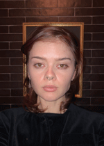

Kat Chapman's AENG Website Portfolio |
||
| home Cereal Box Project Commercial Project Bookmark Project | ||
|
 student atMillersville University |
Hi, my name is Kat Chapman. I am a senior Art student at Millersville University. During this spring semester of 2025, I have had had my work shown in two school shows, Menagerie and the Annual Student Juried Show, where I won first place for my painting, Love Overburdened. Another painting of mine, Heart of a Doberman, has been accepted into Mulberry Studio's, We Love Our Pets show, in Downtown Lancaster. As an artist, I wanted to learn how to communicate to wider audiences through web design and communication information systems. As such, it felt fitting to take an applied engineering course that centered around different communication styles and systems. I am excited to build my artist website, and hopefully this is a great first start to that. So far this semester in AENG, we have learned different sketching techniques, video production and printing processes to make manufactured prints on a offset lithographic printer. For our final project, we are making this website! | |
|
©2025 Kat Chapman | ||